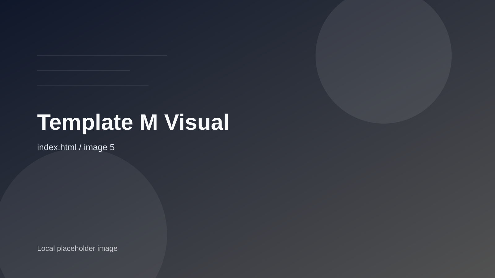

Architecture & Design Portfolio
MINIMAL は、装飾を増やすのではなく、削ぎ落とした先に残る緊張感を設計します。光、素材、余白のバランスで、記憶に残る建築体験をつくります。
Scroll to explore
01 - Selected Works
Kyoto, JP - 2023
Berlin, DE - 2022

Oslo, NO - 2024
02 - Philosophy
少ないことは、何もないことではない。必要なものだけが、最も強く残る状態です。